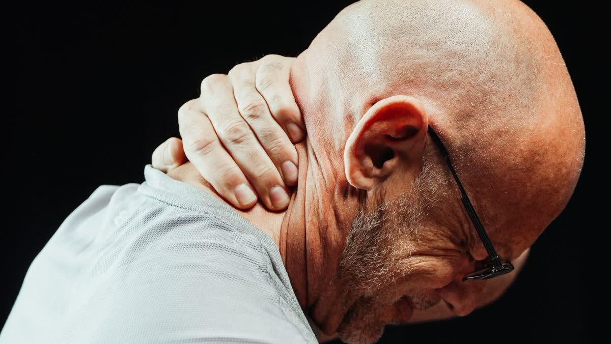

Ask a patient to describe their neck after a crash and you'll hear the same few images. A rope. A steel cable. A knot the size of a golf ball. A shoulder that's been clenched for four days straight.
That's muscle spasm, and it's one of the most common things we see.
Your body's built-in splint
When a joint or ligament gets strained, nearby muscles tighten around it. It's a protective reflex, a kind of internal splint, meant to stop you from moving the injured area too much. In the short term, it makes sense.
The problem is that it often overdoes it. Muscles stay clamped long after the original strain has eased. Blood flow drops in the tight tissue, tender spots form, and the stiffness makes the injured joint move even less. Pain, tightness, and limited motion feed each other.
What it can feel like
- A hard, tender band along the side or back of the neck
- One shoulder hiked higher than the other
- Aching that gets worse by evening, especially after a day at a desk
- Muscles that twitch or cramp when you move a certain way
- Headaches that seem to start from the tight spots
Tools we may use to calm things down
Therapeutic ultrasound uses sound waves to deliver gentle warmth deep into tissue, and it's often used to support circulation and soft-tissue healing. Electrical muscle stimulation, or e-stim, sends mild pulses through pads on the skin to help muscles relax and to ease pain. It feels like a tapping or buzzing, and it's adjustable. If it's too strong, tell us and we'll turn it down.
Those tools tend to work best alongside, not instead of, spinal adjustments, because loosening a muscle that's guarding a stiff joint only goes so far if the joint still isn't moving. Whether any of this is right for you depends on your exam, and results vary from person to person.
Why cranking on it usually backfires
When a muscle feels like a rope, the urge is to yank it, stretch it as hard as you can, or dig a thumb into the sorest spot. Muscles that are guarding tend to react to force by tightening more. Gentle stretches inside your comfort zone are usually a better bet than hard ones, and if a stretch makes the tightness worse an hour later, it was too much.
About those "knots"
Those tender, hard spots people call knots are small areas of muscle that stay contracted and sore to the touch. They often refer pain elsewhere, so a knot at the top of the shoulder can show up as a headache behind the eye. Working on them gently, and fixing whatever keeps loading them, is usually more productive than chasing the pain around.
Heat or ice?
People ask this constantly, and there isn't one right answer. Many find heat soothing for tight, achy muscle, and cold helpful for sharp, recent soreness. Use whichever feels better, for short stretches, with a cloth between it and your skin. If neither helps or the pain is getting worse, let us know.
What you can do at home
Gentle heat on a tight neck or shoulder for 15 or 20 minutes can feel good. Move within comfort, since lying still is usually worse. Change positions at work. If a spasm comes with severe pain, numbness, weakness, or a bad headache, don't wait it out, and get medical attention.
If you were rear-ended on Highway 224, hit in a parking lot in Gladstone, or caught at a light in Oak Grove, a tight neck a few days later is very typical. Read why pain shows up days after a car accident for the reasons, and how whiplash works for the neck side. For how we handle billing and care for crash injuries, see our auto injury page.
Muscles stuck in a knot?
Come in and we'll look at what's driving it. PIP billed directly for auto injury patients.